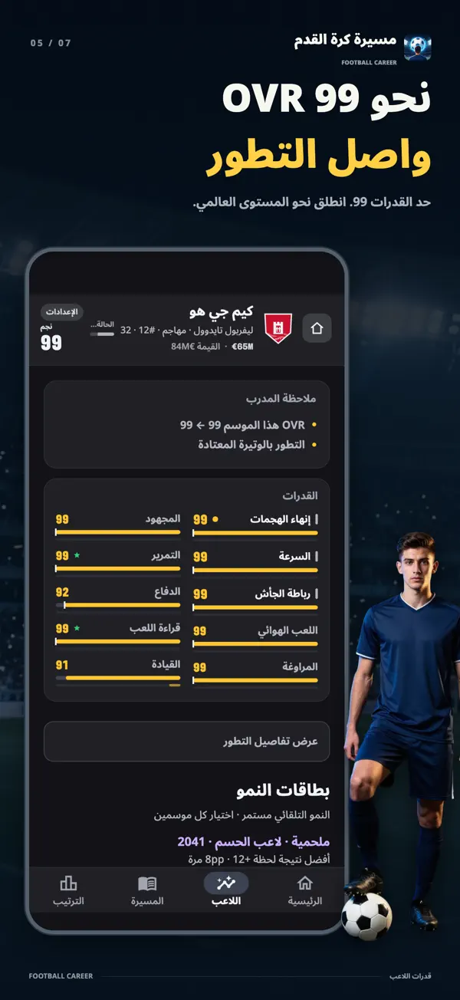
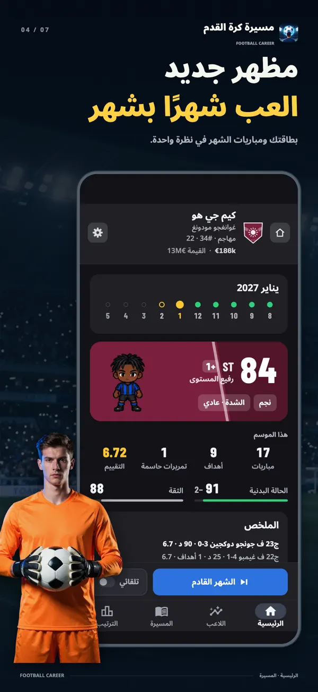
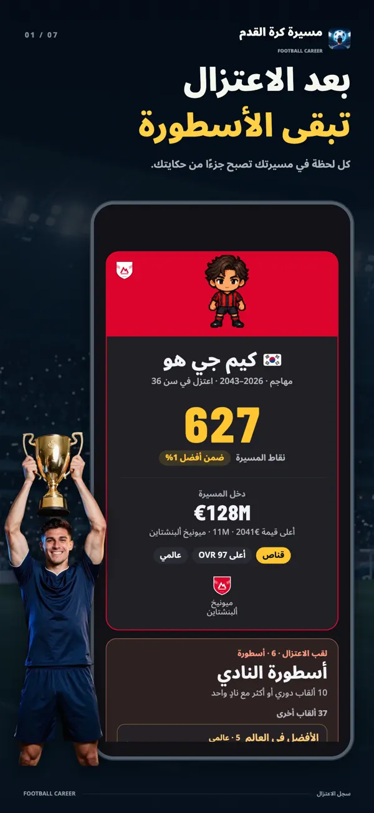
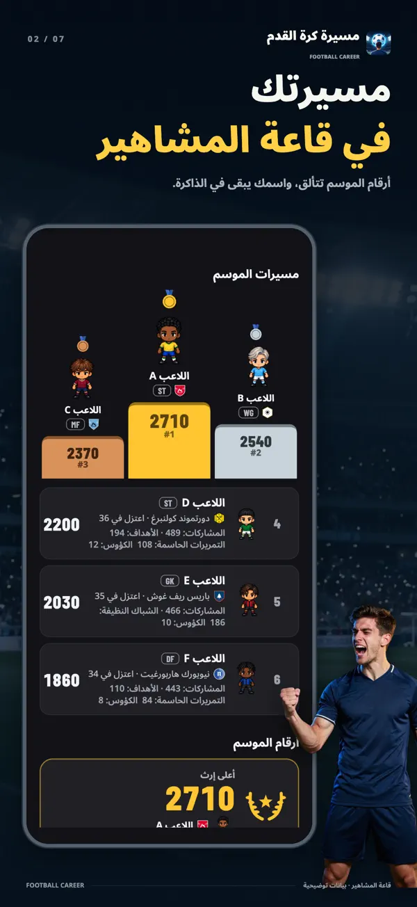
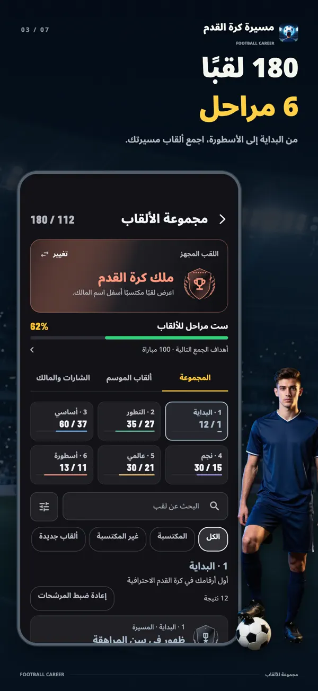
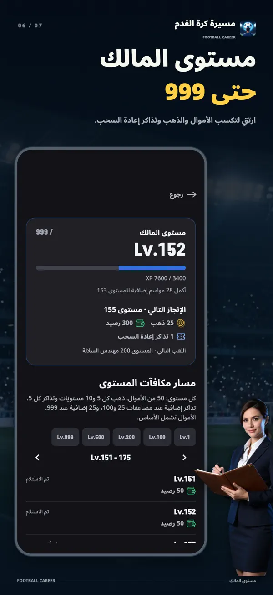
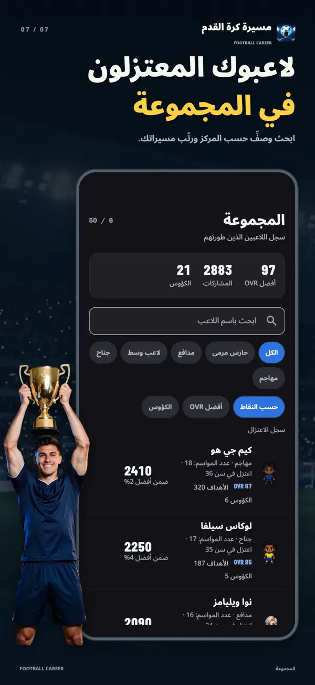

- YT Lab
- محاكي مسيرة لاعب كرة قدم

محاكي مسيرة لاعب كرة قدم بطاقة واحدة قد تغيّر مسيرتك
كل موسمين، اختر واحدة من ثلاث بطاقات نمو بنفس الندرة. ارفع قدراتك فورًا، أو وسّع سقفها المخفي، أو حقّق شرطًا لتحصل على مكافأة أكبر. عش مسيرة لاعب واحد من الأكاديمية في سن السابعة عشرة حتى الاعتزال.
اختر نموّك التالي
مهاجم بعمر 27 عامًا OVR 96يمكنك إعادة رمي كل بطاقة مرة واحدة، وتبقى ندرتها كما هي.
هذه بطاقات التطبيق وحساباته الفعلية: مهاجم نجم في سن 27 عامًا وصل إلى أندر جولة، Legend. تستخدم إعادة الرمي والسحوبات التالية البطاقات والاحتمالات نفسها في التطبيق، وتبدأ التجربة في كل مرة باللاعب نفسه.


التنزيل مجاني مع مشتريات داخل التطبيق. متاحة على iPhone وiPad بنظام iOS 15 أو أحدث، وعلى Android 7.0 أو أحدث.
كل موسمين، ثلاث بطاقات، اختيار واحد
تنمو قدراتك تلقائيًا كلما لعبت، وتضيف بطاقات النمو خيارًا إلى هذا التطوّر. عند البداية، ثم كل موسمين، اختر واحدة من ثلاث بطاقات بنفس الندرة ومن فئات مختلفة. كلما ارتفعت الندرة، قويت التأثيرات. وبطاقتك الأولى مضمونة الندرة الملحمية.
دفعة فورية لقدراتك
ترتفع قدراتك لحظة الاختيار. تمنحك «التركيز يثمر» +6 لمهارة أساسية و+3 لسقفها، بينما ترفع «سدّ الثغرات» أدنى مهارة أساسية وأدنى مهارة داعمة بمقدار 4 لكل منهما.
تجاوز حدودك
لكل قدرة سقف مخفي يتوقف عنده النمو التلقائي. ترفع بطاقات «قليل من الموهبة» و«موهبة مفتوحة» و«قفزة في الموهبة» هذا السقف. ويمكن للبطاقات رفعه حتى 95.
مكافآت تكسبها في الملعب
تمنحك «صائد الأهداف» +1 في إنهاء الهجمات لكل 5 أهداف، و«نجم المباراة» +2 لإحدى القدرات لكل جائزتي MOM، و«جاهز للصعود» +8 لمهارة أساسية بعد 30 مشاركة. عليك أن تكسبها بأدائك.
مكاسب لها ثمن
تمنحك «انطلاقة متفجرة» +8 في السرعة مقابل −3 في اللعب الهوائي. وترفع «موهبة شيطانية» سقف مهارة أساسية بمقدار +12 والمهارة نفسها بمقدار +10، مقابل −3 لمهارة داعمة. لكل مكسب ثمن.
سنوات إضافية في الملعب
تقلّل «الذروة الثانية» التراجع مع العمر إلى النصف لثلاثة مواسم، وتضيف عامين إلى مسيرتك. أما «اللهب الأخير» فترفع ثلاث مهارات أساسية بمقدار +6 لكل منها، لكنك تعتزل في نهاية ذلك الموسم.
إعادة الرمي مجانية
لم تعجبك بطاقة؟ أعد رميها وحدها. تبقى الندرة كما هي، وتأتي البطاقة الجديدة من فئة لا تتطابق مع فئتَي البطاقتين الأخريين.
من مقاعد الاحتياط إلى الكرة الذهبية
لن تبدأ لاعبًا أساسيًا في الدرجة الأولى. تدرّج من الأكاديمية إلى الفريق الرديف، وانتزع مكانك من مقاعد احتياط الفريق الأول، ثم استهدف جائزة أفضل لاعب في العالم التي تُمنح كل موسم. بطاقاتك وأرقام مواسمك تحدد إلى أين تصل.
- 17عامًا
الأكاديمية
تبدأ في الأكاديمية بعمر سبعة عشر عامًا. وتتيح لك حزمة البداية في الشباب البدء من سن الخامسة عشرة.
- 19بحلول هذا العمر
الفريق الرديف
تصعد إلى الفريق الرديف عندما تقترب من مستوى الفريق الأول أو تبلغ التاسعة عشرة. تُحسم الترقيات في نهاية الموسم.
- 16–21سن الظهور الأول حسب الدوري
من احتياطي الفريق الأول إلى التشكيلة الأساسية
يختلف سن الظهور الأول باختلاف الدوري. تصل إلى الفريق الأول عندما تستوفي شروط العمر والقدرات وتقييم الموسم، وتحدد ثقة المدرب وقت لعبك.
- الصيفبعد نهاية الموسم
الانتقالات وتجديد العقود
اطلب الانتقال أو اختر عرضًا، ثم تفاوض مع وكيلك على الأجر وبنود مثل وعد بالأساسية أو الشرط الجزائي.
- 18+في الفريق الأول
المنتخب
تصبح مرشحًا للاستدعاء إلى المنتخب إذا كنت في الفريق الأول وبلغت الثامنة عشرة. تتناوب البطولة العالمية والبطولات القارية كل عامين.
- 36–41حسب المركز
الاعتزال وما يبقى بعده
يستمر الجناح افتراضيًا حتى سن 36، وحارس المرمى حتى سن 41. تستطيع البطاقات والأحداث إطالة مسيرتك، ويمكنك أيضًا اختيار الاعتزال مبكرًا.
العب شهرًا، وشاهد تطوّرك
يمتد الموسم عشرة أشهر، من أغسطس إلى مايو، ويضم 38 مباراة. تتحول مشاركاتك وأهدافك وتمريراتك الحاسمة وشباكك النظيفة وجوائز MOM وتقييماتك إلى نمو شهري، وتظهر كل زيادة بالأرقام. تقدّم شهرًا بشهر، أو دع الموسم يسير تلقائيًا.
النمو خلال شهرالمراوغة 57 → 58 +1
قد يكافئك شهر مميز بجائزة لاعب الشهر أو تشكيلة الشهر، أو تصدي الشهر لحراس المرمى. تحسم الأرقام النتيجة دون سحب مخفي. وفي نهاية الموسم، نافس على الهداف وتشكيلة الموسم ولاعب العام، وصولًا إلى أفضل لاعب في العالم.
من داخل اللعبة







تجربة مختلفة لكرة القدم
مسيرة لاعب واحد
لا توجد شاشة لإدارة التشكيلة أو لوحة تكتيكات أو ميزانية انتقالات. المدرب يمنحك وقت اللعب، وقد يفضّل مدربك الجديد نوعًا مختلفًا من اللاعبين.
الاحتمالات أمامك قبل أن تختار
في المواقف التي تواجهك خلال الموسم، يعرض كل خيار احتمالات ثلاث نتائج بأشرطة ونسب مئوية قبل أن تقرر. ويمكنك الاطلاع على أثر قدراتك وثقة المدرب وحالتك البدنية وبطاقات النمو في تلك الاحتمالات.
لكل دوري مسيرة مختلفة
من إنجلترا وإسبانيا وألمانيا وإيطاليا وفرنسا إلى كوريا واليابان وأمريكا الجنوبية. يختلف سن الظهور الأول والأجر وحصة اللاعبين الأجانب حسب الدوري. جميع أسماء الدوريات والأندية واللاعبين والمدربين خيالية.
تعتزل، وتبقى أرقامك
تبقى حصيلة مسيرتك وتقييمها عبر ستة محاور: الجودة والإنتاج وحجم المشاركات والجوائز والألقاب ومستوى المنافسة. وتعرف ترتيبك المئوي مقارنةً بـ20,000 مسيرة تمت محاكاتها وفق قواعد اللعبة. تدخل المسيرات المكتملة التصنيفات الأسبوعية والشهرية والتاريخية، وكذلك قاعة مشاهير الموسم.
أسئلة شائعة
- هل اللعبة مجانية؟
- يمكنك تنزيل اللعبة واللعب حتى الاعتزال مجانًا، وكذلك استخدام بطاقات النمو وإعادة رميها. تشمل المشتريات الاختيارية إزالة الإعلانات وحزمة المراكز وحزمة البداية في الشباب وحزمة الداعم والذهب وتذاكر إعادة الرمي. احتمالات رمي قدرات البداية متساوية، سواء كانت الرمية مجانية أو بإعلان أو بتذكرة.
- هل أستطيع اللعب دون اتصال؟
- تعمل المسيرة وتُحفظ على جهازك، لذا يمكنك اللعب دون اتصال. يتطلب التصنيف والمشتريات وإنفاق الذهب ونقل البيانات بين الأجهزة اتصالًا بالإنترنت.
- هل أستطيع اللعب على الكمبيوتر أو المتصفح؟
- اللعبة تطبيق لأجهزة iPhone وiPad وAndroid. لا توجد نسخة للعب في المتصفح، لكن يمكنك تجربة بطاقات النمو في هذه الصفحة.
- ما المراكز المتاحة؟
- حارس مرمى ومدافع ولاعب وسط وجناح ومهاجم. حارس المرمى والمهاجم مجانيان، وتفتح حزمة المراكز المراكز الثلاثة الأخرى. لكل مركز سبعة أساليب لعب، بإجمالي 35 أسلوبًا، وكلها مجانية.
- كم مسيرة يمكنني خوضها في الوقت نفسه؟
- تتيح لك خانات المسيرة الثلاث تطوير ثلاثة لاعبين في الوقت نفسه. تحدد جنسيتك الدوري الأول والمنتخب.
- هل يوجد لاعبون أو أندية حقيقية؟
- لا. جميع الدوريات والأندية واللاعبين والمدربين في اللعبة خياليون.
- هل يظهر اسمي في التصنيف؟
- تظهر المسيرات المكتملة في التصنيف، ويمكنك إلغاء ذلك في أي وقت. لا تُنشر الأسماء التي تعدّلها بنفسك إلا بموافقتك.